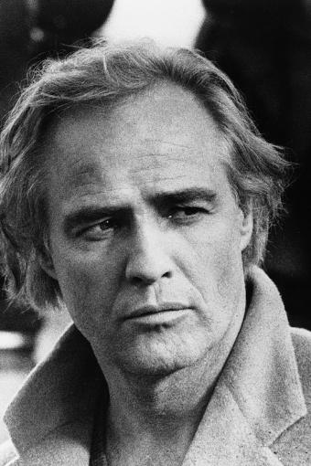

 Marlon Brando Jr. (Omaha, Nebraska, 3 de abril de 1924-Los Ángeles, California, 1 de julio de 2004) fue un actor estadounidense de cine y teatro. Su formación e instrucción teatral fue llevada a cabo por Stella Adler, una de las más prestigiosas profesoras que desarrolló el trabajo de Stanislavski en Nueva York; algunos sábados acudía al Actor's Studio interesado en las clases de Elia Kazan. Se convirtió en actor de teatro a mediados de la década de 1940 y en actor de cine a comienzos de los años 1950. A lo largo de su carrera, recibió múltiples reconocimientos por sus logros artísticos, entre ellos dos premios Óscar al mejor actor —por On the Waterfront (1954) y El padrino (1972)—, dos Globo de Oro y tres BAFTA. Se hizo mundialmente conocido en la década de 1950 por sus intervenciones en películas como Un tranvía llamado Deseo (1951), Viva Zapata! (1952), Julio César y On the Waterfront (1954), entre otras. Posteriormente, su trabajo en el cine comenzó a ser más esporádico, si bien recuperó pujanza con filmes hoy míticos como El padrino, El último tango en París (1972) y Apocalypse Now (1979). Su breve papel en Superman (1978) fue muy comentado por los 4 millones de dólares que cobró solamente por diez minutos de aparición en pantalla. Su última película fue The Score (2001).